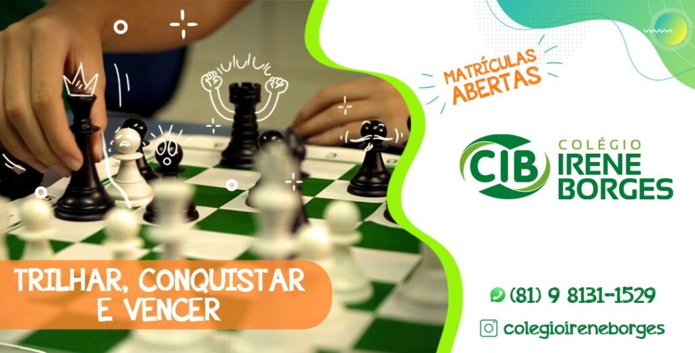

Do Fundamental I ao Ensino Médio, o CIB prepara jovens com excelência acadêmica, valores éticos e visão de futuro.

Desde fevereiro de 1997, o Colégio Irene Borges vem inovando no método de ensino em Caruaru, formando gerações de sucesso. Com uma educação que acompanha os avanços tecnológicos, o CIB prepara os alunos para o mundo, quebrando paradigmas e criando um ambiente conectado às mudanças, mas sempre mantendo os valores da ética, disciplina e cidadania.
Base sólida nas disciplinas essenciais com metodologia ativa e desenvolvimento do raciocínio crítico.
Transição estratégica com aprofundamento nas ciências, humanas e linguagens com olho no futuro.
Intensificação do conteúdo e início da preparação direcionada para o ENEM e vestibulares.
Desde 1997 formando alunos com base sólida, valores e preparo para os desafios do mundo moderno.
Metodologia conectada aos avanços tecnológicos, preparando alunos para um mundo em constante transformação.
Corpo docente experiente e comprometido com o desenvolvimento individual de cada aluno.
Simulados, revisões e acompanhamento estratégico para maximizar o desempenho de cada estudante.
Formação humana que vai além do conteúdo, cultivando responsabilidade, respeito e caráter.
Relação próxima entre escola, alunos e famílias, criando um ambiente de confiança e crescimento mútuo.